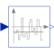

ContinuousMeanCalculates the empirical expectation (mean) value of its input signal |

|
Information
This information is part of the Modelica Standard Library maintained by the Modelica Association.
This block continuously calculates the mean value of its input signal. It uses the function:
integral( u over time)
y = ----------------------
time - startTime
This can be used to determine the empirical expectation value of a random signal, such as generated by the Noise blocks.
The parameter t_eps is used to guard against division by zero (the mean value computation starts at <simulation start time> + t_eps and before that time instant y = u).
See also the Mean block for a sampled implementation.
This block is demonstrated in the examples UniformNoiseProperties and NormalNoiseProperties.
Parameters (1)
| t_eps |
Value: 1e-7 Type: Time (s) Description: Mean value calculation starts at startTime + t_eps |
|---|
Connectors (2)
| u |
Type: RealInput Description: Noisy input signal |
|
|---|---|---|
| y |
Type: RealOutput Description: Expectation (mean) value of the input signal |
Used in Examples (2)
|
Modelica.Blocks.Examples.NoiseExamples
Demonstrates the computation of properties for uniformally distributed noise |
|
|
Modelica.Blocks.Examples.NoiseExamples
Demonstrates the computation of properties for normally distributed noise |